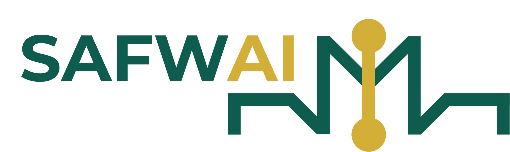

You asked us to study the operational processes of a legal practice starting from scratch — and come back with a clear recommendation on where AI could genuinely help before asking you to commit to anything. We have done that work. This is what follows.
When you were a partner at a firm, the work was distributed. Conflict checks happened. Deadlines were tracked. Time was captured. You did not think about the infrastructure because it worked.
Every one of those processes now runs through you, alongside the matters across DIFC, ADGM, and maritime that require your judgment.
No system behind any of them.
The tools available to a boutique practice don't talk to each other. Your calendar tracks dates. Your email holds the context. Your time tracker needs the work. Your document store has the precedent. Each one is a silo.
You become the integration layer — entering the same information four times, holding the matter context in your head because no system holds it for you.
This is the problem you named directly: process and systems, fundamentally disjointed.
| Document | Type | Fmt | Source ref | Status |
|---|---|---|---|---|
| Al Futtaim Holdings JV Agreement 2023 | JV Agreement | §8.4 tagged | ✓ Complete | |
| Mubadala Infrastructure JV 2022 | JV Agreement | §11.2 tagged | ✓ Complete | |
| Port Rashid Partners Ltd 2021 | JV Agreement | Word | §9.1 tagged | ✓ Complete |
| Gulf Maritime Services Ltd — MOA 2024 | Maritime MOA | §6.3 tagged | ✓ Complete | |
| DIFC Arbitration Files (4 documents) | Arbitration | Sections tagged | ✓ Complete | |
| Standard Services Framework — Draft | Template | Word | Pending | ⏳ Processing |
| Offshore MOA — Port Rashid 2019 (scanned PDF) | Maritime MOA | Extraction failed | ✗ Failed |
| Matter | Year | FM Scope | Carve-outs held | Counter-position | Outcome |
|---|---|---|---|---|---|
| Port Rashid Partners Ltd | 2021 | Standard ICA/CMI | War · Piracy · MARPOL event | Wider epidemiological exclusion sought | Held |
| Mubadala Infrastructure JV | 2022 | Standard + regulatory action | War · Force of state | Counterparty accepted standard | Agreed first mark-up |
| Gulf Maritime Services Ltd | 2024 | Standard ICA/CMI | War · Piracy · MARPOL event | Covid-era precedent cited; 30-day notice challenged | Held — notice 30→14 days |
Dear Ms. Al Ghurair,
I am writing to confirm that Jansen Legal has formally opened your matter file following receipt of your countersigned engagement letter, received today. We are pleased to be acting for Al Noor Medical Holdings in connection with the proposed joint venture structuring with Apex Capital Partners under DIFC law.
Our initial review of the matter scope is underway. Our first substantive working session is scheduled for 15 May 2026, following which I will provide you with a detailed update on strategy and next steps.
I will revert I will be in touch with any preliminary observations before then if anything material arises. In the meantime, please do not hesitate to contact me directly.
Warm regards,
Rita Jansen
Founding Partner · Jansen Legal
Three modules. One shared knowledge base. Every matter record, every billable moment, every client communication — connected.
We start with one phase, on a fixed delivery commitment. Everything that follows extends the same system — no rework, no migrations, no technical debt to carry forward. The pace beyond Phase 1 is set by you, after Phase 1 is settled into use.
We are asking for a founding user agreement in principle — before we begin building. Here is what that means, stated plainly.